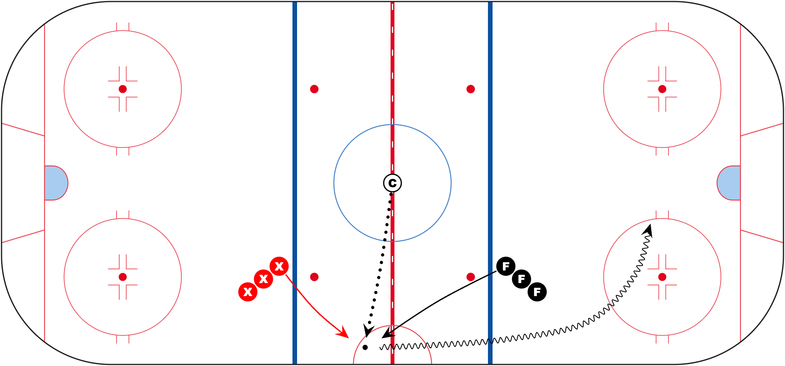
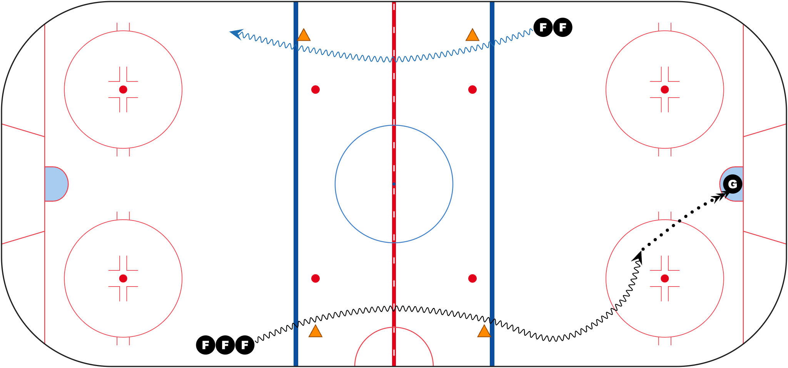
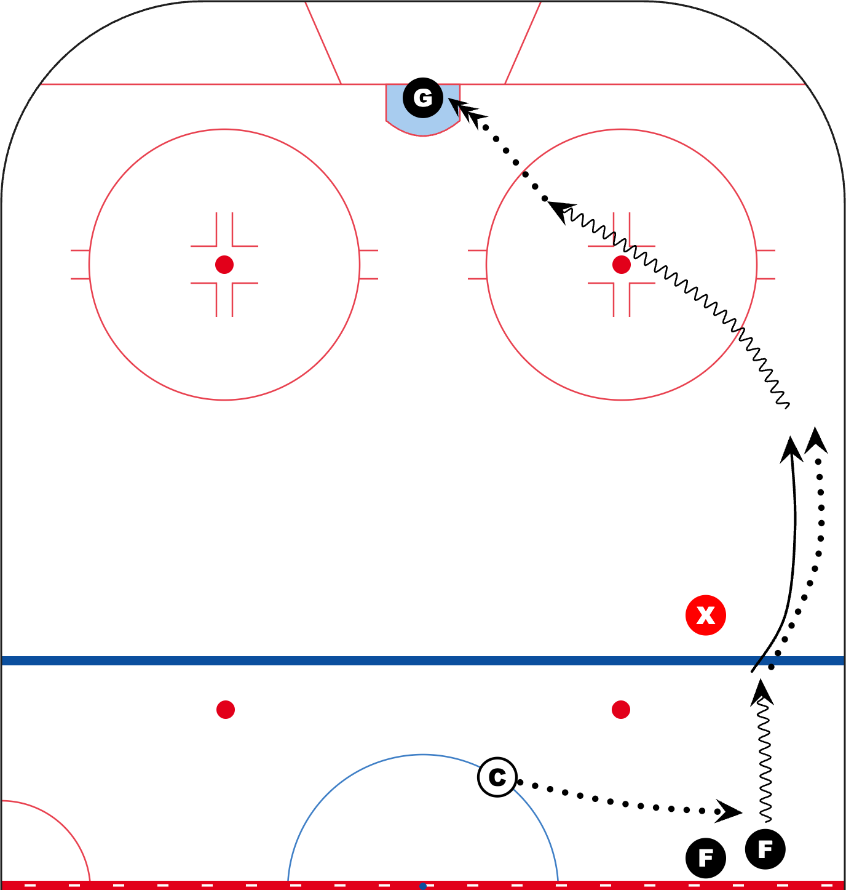
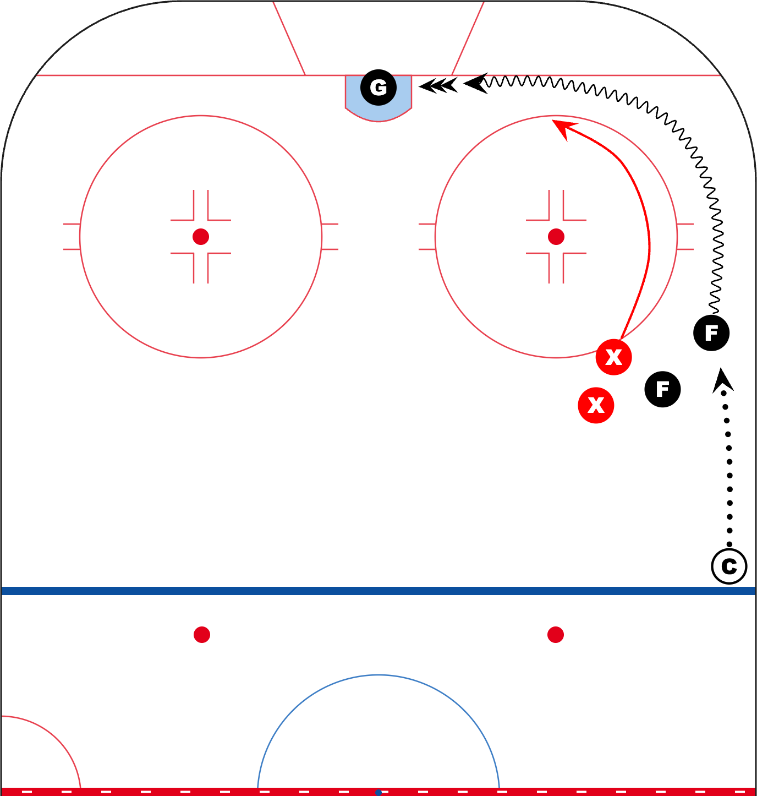
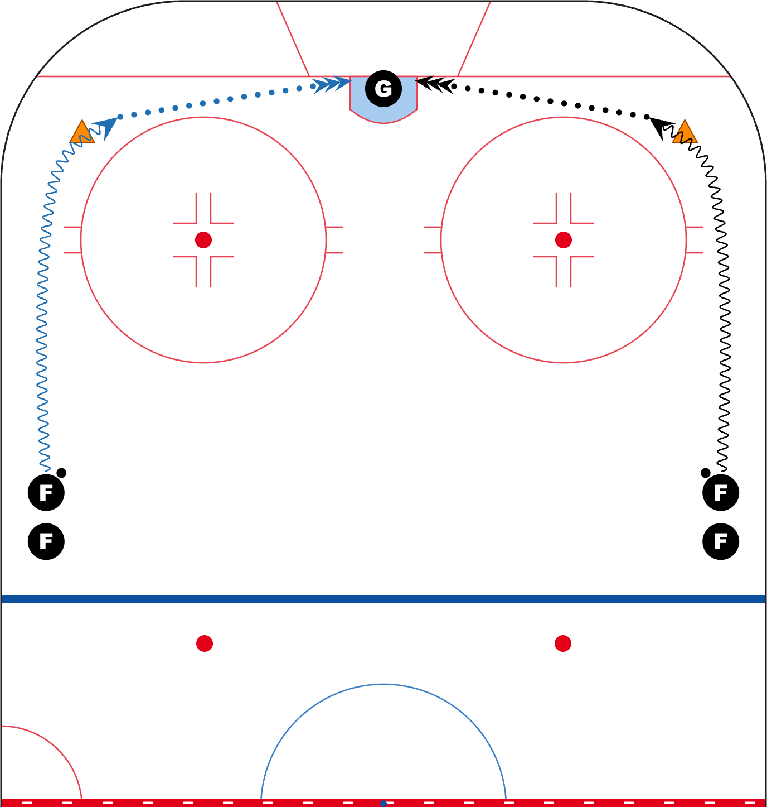

Part A - Individual skills and tactics, rebuilt as a six-drill chain of events
Video Analysis
I selected this sub-one-minute NHL clip (Oilers vs Wild, 2nd period) because one player shows a complete chain of individual skills and tactics in a single sequence, from a contested puck on the wall to a goal. The play gives a 2-1 lead.
Video Title
Connor McDavid uses his speed, goes bar-down
McDavid wins a contested puck on the wall in the neutral zone and protects it in traffic. He turns north up the wall-side lane and builds speed with crossovers and linear strides, the puck pushed out in front. At the offensive blue line, Wild #20 steps up to stand him up; McDavid pushes the puck wide past #20's stick, accelerates around him on the outside and recovers it in stride. He cuts in below the faceoff circle toward the net with a defender on his inside hip, keeping his body between the defender and the puck. He finishes with a quick-release wrist shot near the post, elevated bar-down, feet still moving, while a teammate trails to the net.
Wins a contested puck along the boards in the neutral zone, protecting it with his body in traffic.
2. Transition & Accelerate
Turns north up the wall-side lane and builds speed with crossovers and linear strides, puck out front.
3. Outside Speed Move
As #20 steps up at the blue line, pushes the puck past his stick and accelerates around him, recovering in stride.
4. Net Drive
Cuts in below the faceoff circle toward the net with a defender on his inside hip, puck shielded on the forehand.
5. Finish
Quick-release wrist shot near the post, elevated bar-down, feet moving; a teammate trails to the net.
Identified Skills & Tactics
These are all the individual skills and tactics that occur in the clip. The offensive skills and tactics are what my six drills teach. The defensive tactics the clip exposes are listed too, because the defenders in Drills 3, 4 and 6 are coached on them.
Individual Offensive Skills
Puck Protection on the Wall
Wins a contested puck along the boards in traffic: low, wide base, body between the opponent and the puck, using the wall as a shield.
Drills 1, 6
Acceleration & Crossovers
Turns north and builds speed with crossovers into long linear strides through the neutral zone. No glide anywhere in the sequence.
Drills 1, 2, 6
Puck Control at Speed
Carries the puck pushed out in front, top hand leading and eyes up, so his feet never have to slow down for the puck.
Drills 2, 3
Puck-Past-Stick Push & Recover
Pushes the puck wide past #20's stick and picks it back up in stride after accelerating around him.
Drills 3, 6
Protective Net-Drive Skating
Drives to the net with the defender on his inside hip: inside shoulder low, puck on the forehand, feet moving.
Drills 4, 6
Quick-Release Elevated Wrist Shot
Shoots from close range at the post with a quick release, elevated bar-down, feet still moving.
Drills 5, 6
Individual Offensive Tactics
Puck Recovery & Immediate Transition
Recovers the puck and attacks north right away, before the opposition can reorganize.
Drills 1, 6
Speed Entry Wide
Takes the wall-side lane into the offensive zone at full speed, forcing the defender to make a decision at the blue line.
Drills 2, 3, 6
Beating the Defender Outside
Reads the stand-up and uses outside speed past the stick instead of slowing down to make a move.
Drills 3, 6
Net Drive / Cut to the Net
Cuts in below the faceoff circle toward the net rather than settling for a perimeter shot.
Drills 4, 6
Shooting Short Side In Tight
Picks the near-post top corner from a sharp angle, where the goalie has the least time to seal.
Drills 5, 6
Support / Second Wave
A teammate trails to the net, ready for a rebound and keeping a second defender occupied.
Drill 6 progression
Individual Defensive Tactics Observed
Gap Control (failed)
#20's gap is too loose to close in time; he steps up late and reaches with the stick only, so a puck pushed past the stick beats him.
Drill 6 defender focus
Stick-Only Check
Without moving his feet or getting the body into the play, #20's stick check is easy to beat with speed.
Drills 3, 6
Inside Position on the Net Drive
The defending D loses inside position: the attacker gets below the circle with the puck shielded and a clear lane to the post.
Drills 4, 6
Backchecking
The backchecker arrives late, so there is no back pressure on the puck carrier and the trailer is left free.
Drill 6 progression
Chain of Events
The six drills rebuild the play in the order it happened. Each link isolates one skill, then layers in the tactic, and the final drill puts the whole sequence back together at game speed against live opposition.
Link
Moment in the Clip
Skill / Tactic Trained
Drill
Stage
1
Contested puck recovered on the neutral-zone wall in traffic
Puck protection; puck recovery and immediate transition
Wall Recovery & Explode
Skill isolation
2
Turns north up the wall lane and builds speed, puck out front
Crossovers, linear acceleration, puck control at speed; speed entry wide
Crossover Acceleration with the Puck Out Front
Skill isolation
3
Pushes the puck past #20's stick at the blue line and goes around him
Puck-past-stick push and recover; beating the defender outside
Puck-Past-the-Stick Outside Drive
Skill to tactic
4
Cuts below the circle to the net with a defender on his inside hip
Protective net-drive skating; net drive / cut to the net
Net Drive & Protect
Skill to tactic
5
Quick-release wrist shot near the post, bar-down, feet moving
Quick-release elevated wrist shot; shooting short side in tight
Quick-Release Elevation In Tight
Skill isolation
6
The full sequence, with a trailer and a late backchecker
All skills and tactics linked; support / second wave; defensive gap and backcheck
Wall Recovery to 1-on-1 (+ Trailer) Game Rebuild
Game-like
Progression logic: skill isolation (Links 1, 2, 5) builds the technique without pressure. The skill-to-tactic links (3, 4) add a defender and a decision. The game-like rebuild (Link 6) adds live opposition, a trailer and a backchecker, so players have to choose and execute the whole chain at game speed.
Six-Drill Chain of Events
Each diagram is a CoachThem drill diagram. Our players are black, opponents (X) are red, the coach is the white C and G is the goalie; solid lines are skating routes, wavy lines are skating with the puck, dashed lines are backward skating, dotted lines are passes, a dotted line ending in a triple arrow is a shot, and orange triangles are cones.
Research-informed drill design: All six drills are original adaptations built from the clip. Public skill-development and 1-on-1 resources from Hockey Canada, Ice Hockey Systems and CoachThem informed the progressions; they are listed in the Drill Sources section.
1
Chain Link 1 · Skill Isolation
Wall Recovery & Explode
Objective: Win a contested puck on the wall, protect it with the body, then pivot north and explode up the wall-side lane.
Puck ProtectionPuck RecoveryAcceleration

Setup
Full ice, worked in the neutral zone. The coach stands at centre ice with pucks. Forwards line up beside the far blue line; opponents (X) line up beside our blue line. Run the mirror on the far wall so both sides and both hands get reps.
Detailed Drill Instructions
Place the puck in traffic: The coach rims or places a puck on the wall in the neutral zone. The forward and X leave at the same time, but X is set a stride closer so the forward must recover the puck with pressure arriving on his back.
Arrive low and wide: The forward gets to the wall with a wide base, knees bent and the inside shoulder lowered. He takes the puck on the skates or forehand, with his body between X and the puck.
Protect, then escape: X starts passive (stick and body lean only), then progresses to a legal, controlled battle. The forward uses the wall as a teammate: hip into X, puck on the boards side, eyes up to find the lane north.
Pivot north: Once he has control, the forward turns up ice toward the wall-side lane, using a tight turn away from pressure. He pushes the puck out in front as he turns, so the first stride is already forward.
Explode with crossovers: The forward accelerates with two or three crossovers into linear strides and drives through the far blue line in the wall lane. Finish through the far top of the circle and rotate to the X line.
Progression, scoring and rotation: Start with X passive and no stick, then add X's stick, then a live 3-second battle before the forward may escape. Scoring: 1 point for a recovery without losing possession, 1 point for reaching the far blue line before X can catch up. Run 6-8 minutes, about 4 reps per player.
3 Key Teaching Points
Low and wide on arrival: lower the inside shoulder and get the body between the opponent and the puck.
Use the wall: keep the puck on the boards side and your hip into the checker until you have control.
Turn north and push the puck ahead, so the first stride out of the battle is already acceleration.
2
Chain Link 2 · Skill Isolation
Crossover Acceleration with the Puck Out Front
Objective: Build top speed up the wall-side lane with crossovers and linear strides while the puck stays pushed out in front, with no gliding.
AccelerationCrossoversPuck Control at Speed

Setup
Full ice. Two cones in each wall-side lane: one just outside our blue line and one at the far blue line, set so the skater makes a gentle arc. Players start inside our blue line with a puck. A mirror lane runs the other way on the far wall. One goalie in the far net.
Detailed Drill Instructions
Start inside the zone: The player starts in the wall-side lane inside our blue line with the puck in front. The first three strides are short and explosive, so he is at speed before the blue line.
Crossover through the arc: At each cone the player uses crossovers to hold the arc instead of gliding around it. Both feet stay working; the outside leg pushes and the inside leg crosses under.
Puck out front: The puck is pushed ahead into open ice and collected in stride, not cradled at the side. The top hand leads and the eyes stay up, checking the far blue line instead of the puck.
Straighten into linear speed: After the second cone the player straightens up the wall with full linear strides: long extension, full recovery, no glide. This is the speed McDavid carries into the offensive blue line.
Finish with a shot: The player curls in from the wall at the top of the far circle and shoots in stride. He then joins the mirror lane line for the return rep.
Progression, scoring and rotation: Begin without a puck to set the crossover pattern, then add the puck, then time each rep from our blue line to the far blue line. Add a chaser who starts one stick length behind to force speed under pressure. Scoring: beat your own time, and lose the rep if you glide or lose the puck.
3 Key Teaching Points
Explosive first three strides, then crossovers through the arc: never glide around a cone.
Push the puck out in front and collect it in stride; the top hand leads and the eyes stay up.
Finish with full linear strides through the blue line, carrying speed into the zone.
3
Chain Link 3 · Skill to Tactic
Puck-Past-the-Stick Outside Drive
Objective: Beat a defender who steps up at the blue line by pushing the puck wide past his stick and accelerating around him to recover in stride.
Outside Speed MovePuck Control at SpeedBeating the Defender

Setup
Offensive half of the ice. A defender (or a pylon with a stick laid across it) stands just inside the blue line on the wall side. The coach passes from the neutral zone to forwards who start at the red line in the wall lane. One goalie in net.
Detailed Drill Instructions
Receive with speed: The coach passes into the wall lane and the forward receives at the red line already moving. He attacks the blue line at full speed with the puck out front.
Read the stand-up: As the defender steps up, the forward reads the stick. If the stick is reaching toward the middle and the space between the stick and the boards is open, that is the lane.
Push it past the stick: One or two strides before contact, the forward pushes the puck wide along the boards, past the defender's stick and outside his body. The push is firm enough to get by the stick but short enough to recover.
Accelerate around: The forward does not slow down to make the move. He crosses over once to go outside the defender, keeping his body between the defender and the puck.
Recover in stride: He picks the puck up again below the top of the circle without breaking stride and continues to the net for a shot.
Progression, scoring and rotation: Start against a pylon with a stick, then a passive defender who only extends the stick, then a live defender who may step up and play the body legally. Add a time limit of 4 seconds from the red line to the shot. Scoring: 1 point for a clean recovery, 2 points for a goal off the move.
3 Key Teaching Points
Attack the blue line at full speed; the move only works if the defender has to commit.
Push the puck past the stick, not into the skates, and only as far as you can recover in stride.
Accelerate through the move with your body between the defender and the puck.
4
Chain Link 4 · Skill to Tactic
Net Drive & Protect
Objective: Drive from the wide lane below the faceoff circle to the near post while a defender pressures the inside hip, protecting the puck on the forehand.
Net DrivePuck ProtectionProtective Skating

Setup
Offensive half of the ice. The coach is on the wall at the blue line with pucks. Forwards start in the wide lane beside the faceoff circle, near the wall; defenders start a stride inside them, toward the top of the circle. One goalie in net.
Detailed Drill Instructions
Pass to the wide lane: The coach passes to the forward, who receives in stride in the wide lane beside the circle.
Drive below the circle: The forward drives along the wall below the faceoff circle and then cuts toward the near post along the goal-line side, staying tight to the net instead of drifting into the slot.
Defender on the inside hip: The defender applies back pressure on the forward's inside hip, starting with stick only and progressing to stick and body. He tries to lift the stick or push the forward past the net.
Protect on the forehand: The forward keeps the puck on his forehand, away from the defender, and lowers his inside shoulder into the defender. His body stays between the defender and the puck the whole way, and his feet keep moving.
Finish at the near post: At the post, the forward finishes quickly: a short-side shot or a tuck before the goalie can seal the post. The defender then becomes the next forward.
Progression, scoring and rotation: Start with the defender's stick only, then allow legal body contact, then add a second defender in front of the net to force the forward to finish through traffic. Scoring: 1 point for reaching the post with possession, 2 points for a goal.
3 Key Teaching Points
Drive below the circle and tight to the net; don't drift into the slot and give the defender a better angle.
Puck on the forehand, inside shoulder low: your body is the shield between the defender and the puck.
Keep your feet moving to the post so the defender can't push you past the net.
5
Chain Link 5 · Skill Isolation
Quick-Release Elevation In Tight
Objective: Score from close range at the near post with a quick, elevated wrist shot released in stride.
Quick-Release Wrist ShotShooting In TightShooting Short Side

Setup
Offensive half of the ice. Two lines start wide on opposite walls near the blue line, each with pucks. A cone sits below each faceoff circle near the goal line. A shooter tutor or targets cover the bottom of the net so only the top corners are open. Goalie optional for the first round.
Detailed Drill Instructions
Carry wide, eyes up: The player carries in the wide lane with the puck out front and eyes on the net.
Cut around the cone: He cuts around the cone below the circle toward the near post, keeping speed. This copies the angle of the net drive from Drill 4.
Release in stride: The shot is released off the cut without an extra stickhandle and without stopping the feet. The puck moves from the back of the stance to the front in one quick pull.
Elevate to the top corner: The player opens the blade and finishes high with the stick pointing at the target so the puck lifts over the goalie's pad and blocker. The near-post top corner is the first look.
Alternate lines: Lines alternate, so every player shoots from both the forehand and backhand side of the ice. Add a goalie once players can hit the targets at speed.
Progression, scoring and rotation: Shoot at the shooter tutor with no goalie, then with a goalie, then add a passive defender on the inside hip (linking back to Drill 4). Scoring: 1 point for hitting a top-corner target, 2 points for a goal against a live goalie.
3 Key Teaching Points
Release off the cut in one motion: no extra stickhandle and no pause in the feet.
Open the blade and follow through high to the target to elevate the puck in tight.
Look near-post top corner first; that is where the goalie is weakest at a sharp angle.
6
Chain Link 6 · Game-Like Rebuild
Wall Recovery to 1-on-1 (+ Trailer) Game Rebuild
Objective: Put the whole play back together at game speed: recover on the wall, transition north, beat the defender wide, drive the net and finish.
Full ice. The coach is at centre ice on the far wall with pucks. Forward 1 (F1) starts in the neutral zone; a defender (X) starts at the offensive blue line ready to skate backward. In the progression, a trailing teammate (F2) and a backchecker (X2) start near our blue line. Goalie in the offensive net.
Detailed Drill Instructions
Chip to the wall: The coach chips a puck to the wall in the neutral zone. F1 recovers it under the same pressure cues from Drill 1 and protects it with his body.
Transition north: F1 turns up the wall-side lane and accelerates with crossovers (Drill 2) while X skates backward and tries to set a gap at the blue line.
Beat the defender wide: When X steps up, F1 pushes the puck past his stick and accelerates around the outside (Drill 3). If X keeps a good gap, F1 keeps speed wide and uses the net drive instead.
Drive and protect: F1 drives below the faceoff circle to the near post with X on his inside hip and the puck on his forehand (Drill 4).
Finish in stride: F1 releases a quick, elevated shot at the near post without stopping his feet (Drill 5) and plays any rebound.
Add the second wave: Progression: F2 trails the play and drives the far post as support, while X2 backchecks from behind. It becomes a 2-on-2, and F1 reads whether to shoot, use the trailer or attack the net.
Progression, scoring and rotation: Run it 1-on-0 with the coach as a passive stick, then 1-on-1 live, then 1-on-1 plus a backchecker, and finish 2-on-2 with the trailer and the backchecker. Defensive players work on the tactics the clip exposed: a tight gap before stepping up, the body on the inside hip, and the backchecker arriving early. Scoring: attackers get 1 point for a controlled entry and 2 for a goal; defenders get 2 points for a takeaway.
3 Key Teaching Points
Link the chain at full speed: recover, turn north and attack before the defender is set.
Read the defender at the blue line: push the puck past the stick when he steps up; keep speed wide when he doesn't.
Get to the net with your body protecting the puck and finish in stride; the trailer drives the far post.
Drill Design References
The six drills above are original adaptations designed to rebuild this clip, shown as CoachThem drill diagrams. These public resources informed the skill progressions and 1-on-1 structure; no drill has been copied.